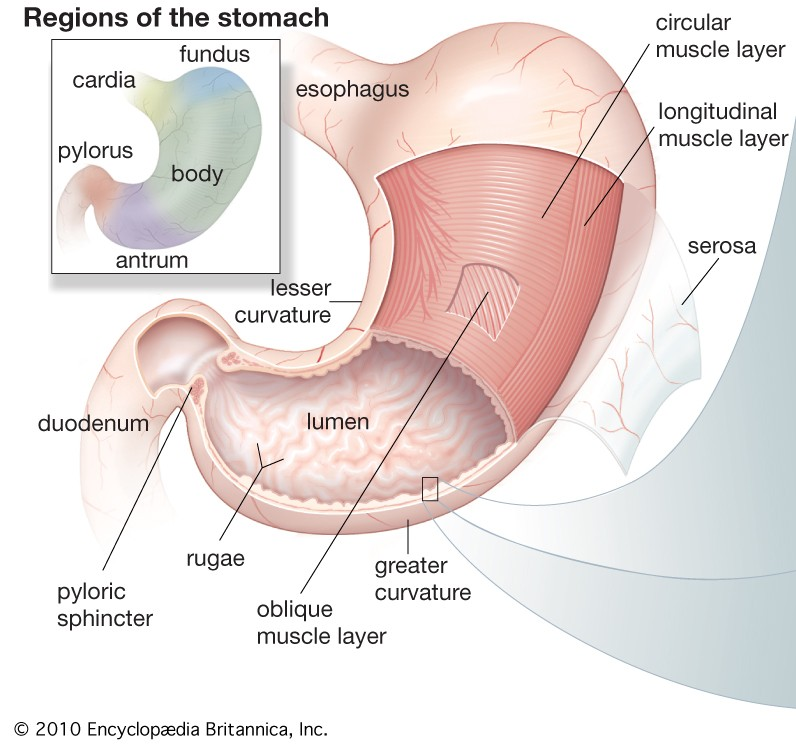

Tilbake til artikkelserien om menneskets fysiologi
Når vi spiser eller drikker, vil maten fraktes fra munnen og ned til magesekken, før den vandrer gjennom tarmsystemet og kommer ut på andre siden. Et fellesnavn på hele dette systemet er gastrointestinaltrakten (GI-trakten). Fordøyelseskanalen fungerer som en barriere for hva som slippes inn i kroppen, og alt som skjer her skjer per definisjon utenfor kroppen . Hva er det egentlig som skjer på de ulike stedene i GI-trakten? Det skal vi se litt på i denne artikkelen.
Artikkelen tilhører artikkelserien om Menneskets fysiologi.
Munnen
Fordøyelsen av maten starter i munnhulen. Først og fremst gir tyggingen en mekanisk nedbrytning av maten. Dette ødelegger cellemembraner og bryter opp maten i mindre biter, noe som øker overflaten slik at fordøyelsesenzymene får en større kontaktflate å virke på. Tyggingen gjør også, sammen med tungens bevegelser, at maten blandes med spyttet, noe som gjør den enklere å svelge.
Spyttet produseres i spyttkjertlene og har en del viktige funksjoner ved siden av å gjøre maten lettere å svelge. Antistoffer i spyttet reduserer antallet bakterier i munnhulen, samtidig som bikarbonat nøytraliserer syre og beskytter tannemaljen. Spyttet inneholder også fordøyelsesenzymene amylase og lingual lipase, som starter nedbrytningen av stivelse og fettsyrer.
Spiserøret
Når vi svelger maten beveger den seg gjennom spiserøret (esophagus) og ned i magesekken. Spiserøret er dekket av glatt muskelvev, som med rytmiske kontraksjoner presser maten nedover mot magesekken. Denne formen for muskelkontraksjoner kalles peristaltikk. Turen fra munnen og ned til magesekken tar ca 8-10 sekunder
Magesekken

I magesekken lagres maten før den slippes videre ut i tynntarmen. Maten blandes godt med magesaften, som inneholder noen viktige stoffer for fordøyelsen. Saltsyre gir et surt miljø, som i tillegg til å drepe uønskede organismer også hjelper til med å bryte ned proteiner. Det skilles også ut fordøyelsesenzymer som pepsinogen (proteinfordøyelse) og gastrisk lipase (fettfordøyelse). Amylasen fra spyttet fortsetter å virke i magesekken, og spalter opp stivelse. Intrinsic factor, som er viktig for opptaket av B12, produseres også i magesekken. Det produseres også en del slim som blander seg med maten og gjør at den lettere kan gli gjennom tarmsystemet.
Tømmingen fra magesekken skjer gjennom en ringmuskel som heter pylorus. Her slippes maten ut i små porsjoner som kalles kymus, som da er en blanding av fordøyelsesvæske og små matpartikler.
Bukspyttkjertelen og galleblæren
Disse to kjertlene er sentral i fordøyelsen, da de produserer mange viktige fordøyelsesenzymer som virker i tynntarmen.
Bukspyttkjertelen (pankreas) skiller ut bukspytt som blander seg med kymus fra magesekken. Bukspyttet inneholder bikarbonat, som nøytraliserer det sure innholdet som ble dannet i magesekken. Dette er viktig for å beskytte slimhinnen i tynntarmen, som ikke tåler den sterke saltsyren, i tillegg til at det gir en optimal pH for fordøyelsesenzymene fra bukspyttkjertelen. Av disse enzymene finner vi blant annet trypsin (proteinfordøyelse), lipase (fettfordøyelse) og amylase/glukosidase (karbohydratfordøyelse). Vi produserer ca. 1,5L bukspytt i døgnet.
Fra galleblæren skiller vi ut galle, som produseres i leveren og lagres i galleblæren mellom måltidene. Gallen inneholder gallesalter, som er sentrale i opptaket av fett og fettløselige vitaminer. Nederst i tynntarmen reabsorberes gallesaltene slik at de kan brukes på nytt.
Tynntarmen
Tynntarmen deles inn i tre deler, duodenum (tolvfingertarmen), jejunum og ileum. Totalt sett er tynntarmen fra 3-8m lang hos voksne mennesker. I duodenum blandes kymus med gallesalter og bukspytt, slik at nedbrytningen av næringsstoffene fortsetter. Selve opptaket av næringsstoffene skjer hovedsakelig i jejunum og ileum.
Matens bevegelse gjennom tynntarmen er styrt av glatt muskelvev som ligger i tarmveggene. Den vanligste bevegelsen kalles segmenteringsbevegelser, og skjer ved rytmiske kontraksjoner som deler tarminnholdet opp i mindre deler og flytter det fram og tilbake. På denne måten kommer fordøyelsesenzymene i kontakt med alt innholder, slik at nedbrytningen av næringsstoffene blir tilnærmet fullstendig. Disse kontraksjonene skjer hyppigere øverst i tarmen enn lenger nede, slik at kymus totalt sett presses nedover.
Næringsstoffene tas opp gjennom cellene i tarmveggen etter at nedbrytingen er tilstrekkelig. Etter at mesteparten av næringsstoffene er tatt opp erstattes segmenteringsbevegelsene med peristaltiske bevegelser som presser det resterende tarminnholdet videre over i tykktarmen. Det resterende tarminnholdet består av ufordøyd mat (f.eks. fiber), bakterier og avstøtte (døde) tarmceller.
Tykktarmen
I tykktarmen har vi mange bakterier. Disse syntetiserer blant annet vitaminer som kan absorberes herfra. Bakteriene kan også fermentere ufordøyd næring fra tynntarmen. Et eksempel på et næringsstoff som fermenteres her er fiber. Vi har ikke enzymer som kan bryte ned fiber, men det har bakteriene. Ved nedbrytning av fiber danner bakteriene korte fettsyrer, som kan absorberes og fraktes til leveren. Disse fettsyrene kan også brukes som energi i tarmen, og er regnet som tarmcellenes viktigste energikilde. Det som hovedsakelig absorberes fra tykktarmen er vann og elektrolytter.
Muskelbevegelsene i tykktarmen skiller seg litt fra de i tynntarmen. Segmenteringsbevegelser skjer også her, men i tillegg har vi massebevegelser, som er kraftige muskelkontraksjoner som flytter innholdet mot endetarmen, og antiperistaltiske bevegelser, som bidrar til å forsinke transporten slik at mest mulig vann og salter kan absorberes. Ved høyt innhold av salter i tykktarmens innhold vil mindre vann absorberes, og vi får løs avføring/diaré.
Avslutning
Dette er på ingen måte en fullstendig gjennomgang av fordøyelsen, men heller en kort innføring i hva som skjer på de ulike stedene. For beskrivelse av hvordan de ulike næringsstoffene blir tatt opp, kan du finner mer informasjon i artikkelserien om næringsstoffene.